ZYKLUS
Six million people live inside a mountain, ten levels deep. Heat rises — so the poor live at the top, in the heat, and the rich at the bottom, in the cool.
Go downLevel One
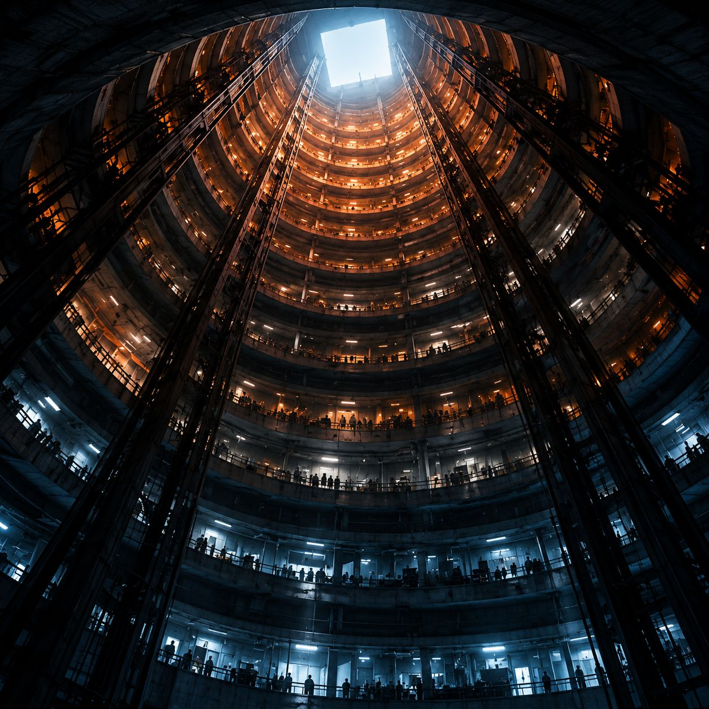
The heat of six million people rises and collects here. Level One is crowded, loud and poor — and the closest anyone lives to the rock above.
Level Two
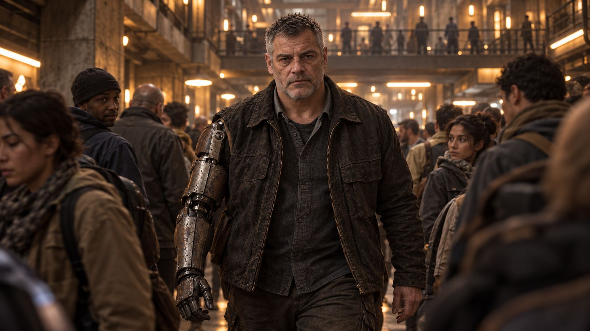
On Level Two the city keeps its records — and its investigators. One of them is actually thorough. That is about to become a problem for somebody.
Level Four
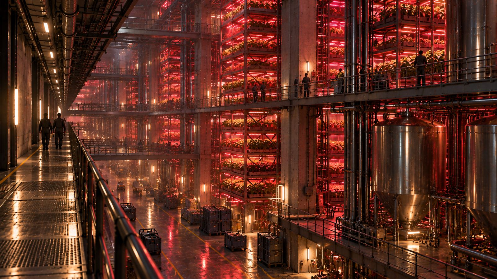
The city feeds itself in halls under red lamps. Somewhere in these numbers is the first thing that doesn't add up.
Level Nine
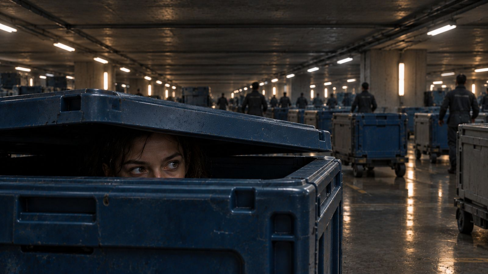
Cooler now. Quieter. Level Nine moves the city's goods — and keeps a small council room where a record can be amended for seven days. After that, it is what's in it. Forever.
Level Ten
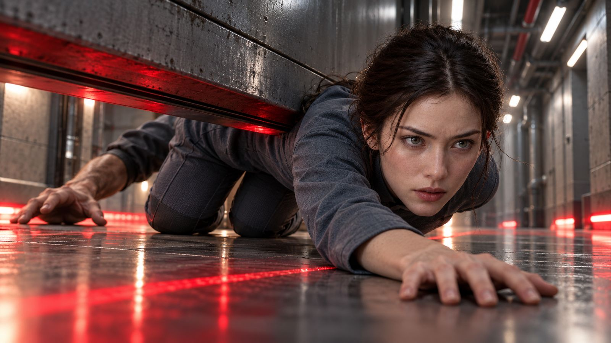
At the bottom of the city it is cool, quiet and rich. Ceilings of four metres, old wood, the two great Houses: Sarn and Vesk. One evening, every light on Lian Sarn's way home turns red. Her door won't open. And someone has reported her in connection with a death.
Found: 0
What's above the rock?
For two hundred years the surface has been habitable again. Nobody down here knows. And the people who find out keep disappearing.
A new episode every Friday · 8 pm Berlin time · BRACKS every Wednesday from 21 October
Bought
Hiding in the laundries of Level Eight — while House Vesk makes the hunter an offer.
Nothing From Before
Stripped of her name, Lian vanishes into the cold of Level Five.
She Calculates
Under a false name, Lian finds out what the city is missing.
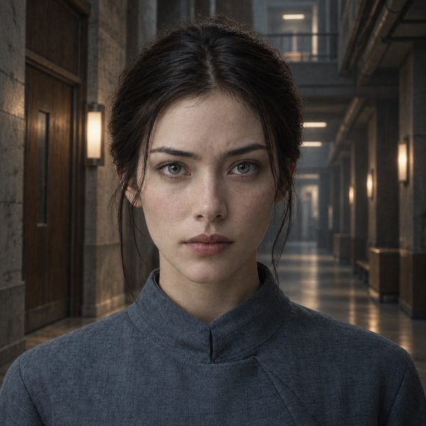
Lian Sarn
Calculates when she's afraid.
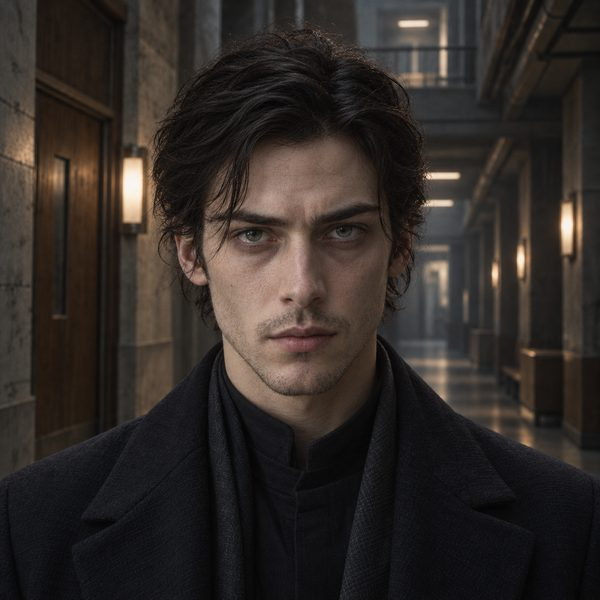
Toren Vesk
Reported dead. Knocking at 1:20.
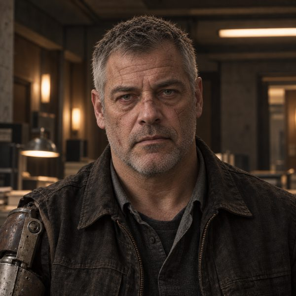
Erek Bracks
The one who is thorough.
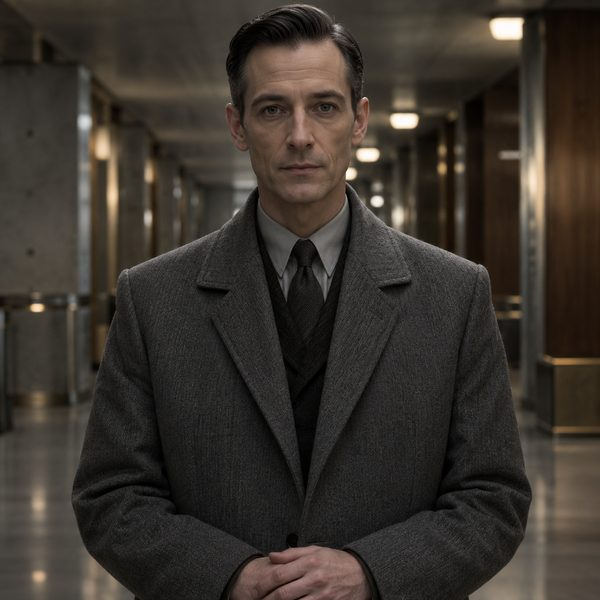
Halen
Politeness as a procedure.
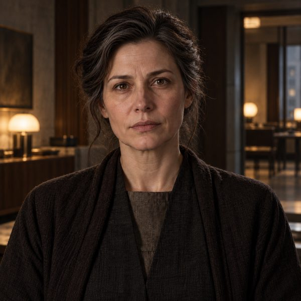
Meret Sarn
Never more than five sentences.
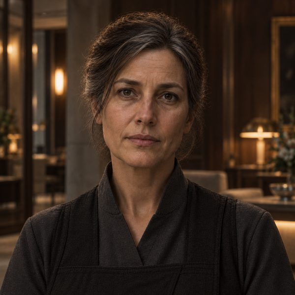
Malin
Tidies up instead of answering.
Adapted from the ZYKLUS novels by Tim Mecklenburg. The story and the world are written by a human author; narration, voices, the faces of the speaking characters, illustrations and music are created with the help of artificial intelligence (disclosure under Art. 50 of the EU AI Act). Zyklus is German for cycle.